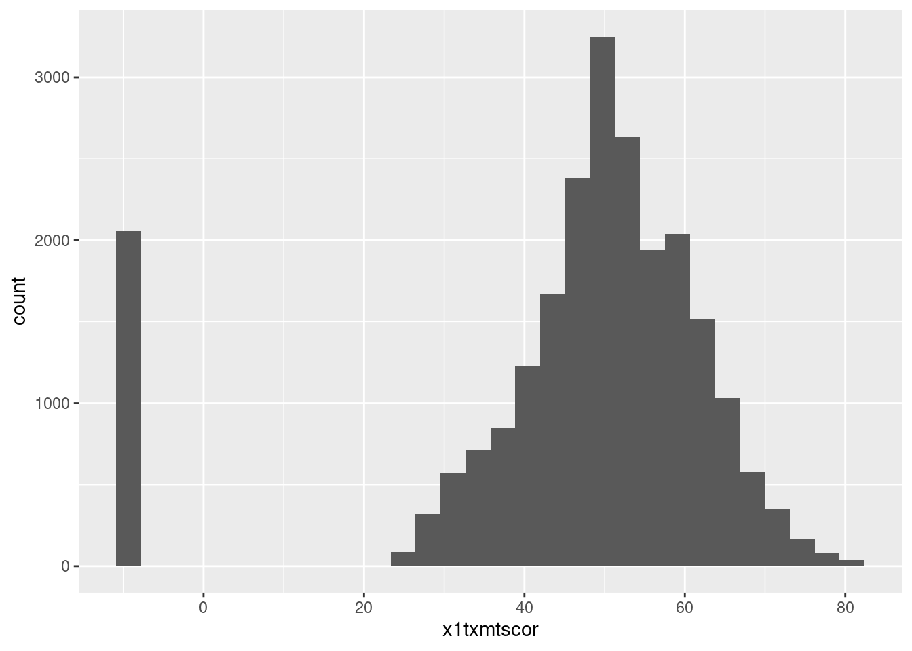
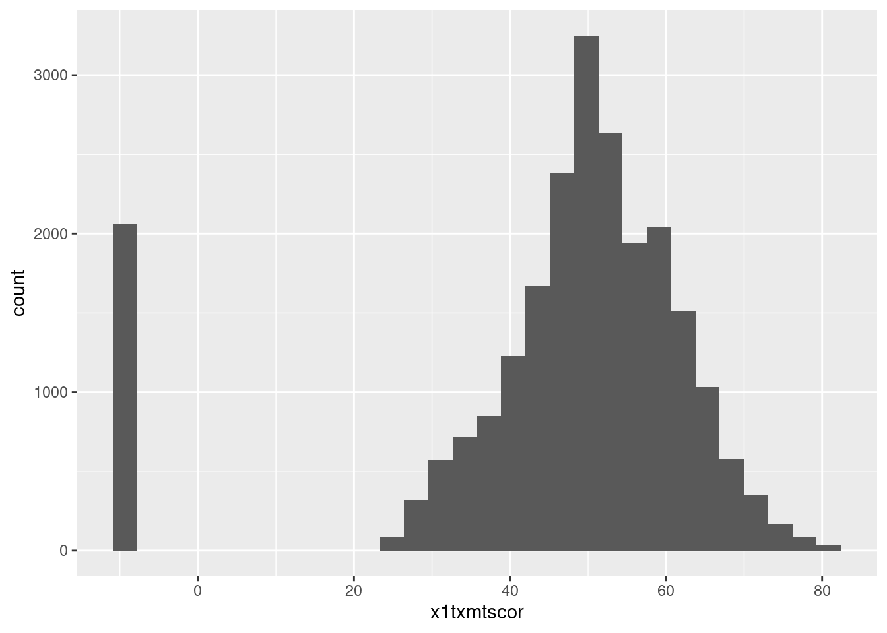
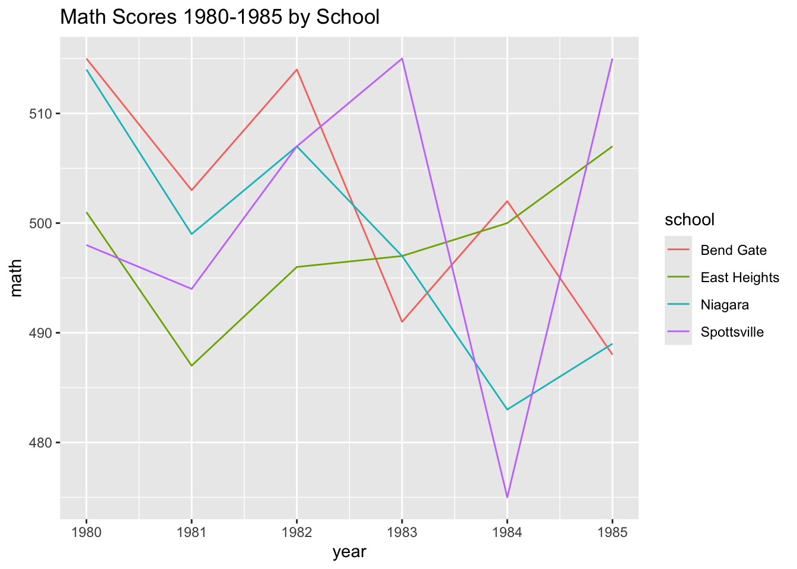
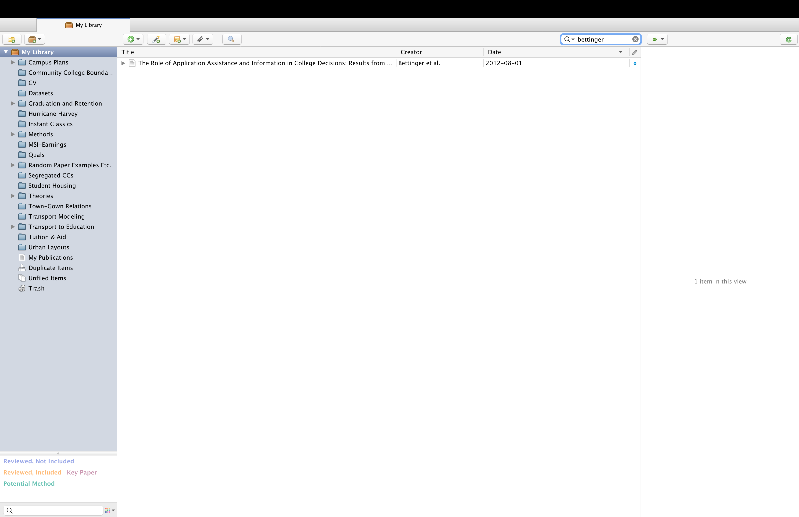
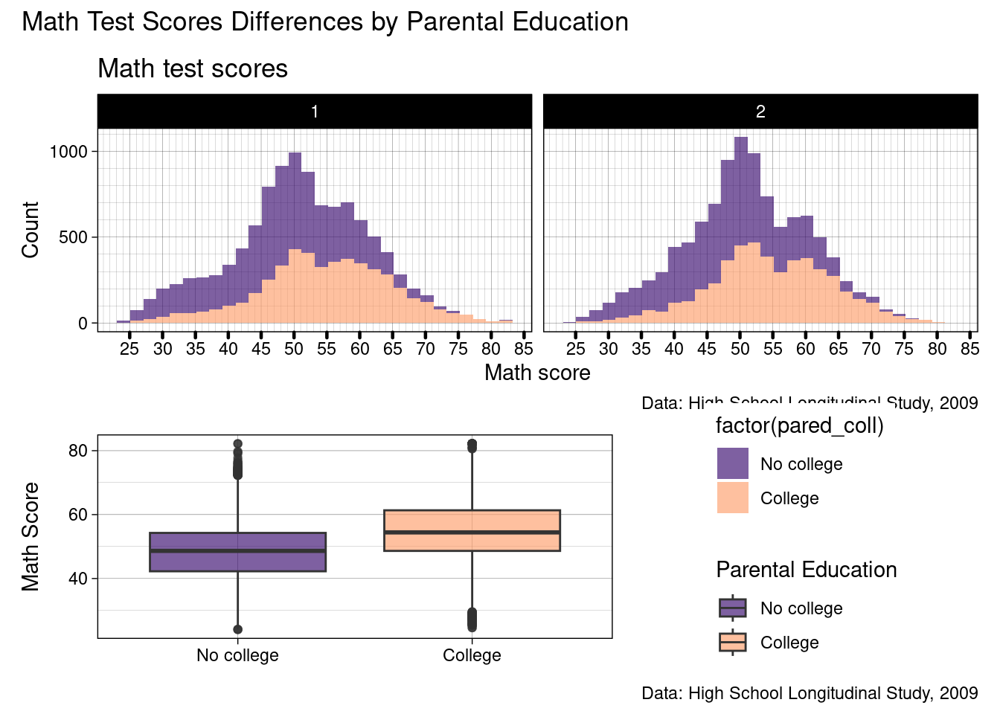

library(tidyverse)
library(haven)
data <- read_dta("data/hsls-small.dta")
ggplot(data) +
geom_histogram(aes(x = x1txmtscor))
Up until now, you’ve likely written most of your assignments using a Microsoft Word or something similar
There are a few major reasons Quarto has most replaced Word for 95% of my work
Quick Discussion
In addition to not having to type out the table in the first place, a big pro of that any changes you make in your analysis (e.g., cleaning a variable differently, including a new variable in the analysis)
What kind of real-world situations do you think would help in?
Reproducibility & transparency - By writing your document in Quarto, you see where everything in your paper comes from - This makes it much easier for someone looking to reproduce your work and/or see where you got a result from
Integration with Zotero for citations - We will look at this towards the end of the lesson, but, it’s a great feature!
Version control with git - One of your (more challenging) extra-credit opportunitites is to use git, which is a way to track changes in your projects - Working with git basically allows you to keep a record of all the changes you save
One document, many formats! - Again, we will look at some of these in just a little bit!
To get started, let’s all open a totally blank Quarto file that we can build up over the lesson
In RStudio go to “File” -> “New File” -> “Quarto Document” -> “Create Empty Document” (bottom left corner)
just write text**use two astrisks around the text**_use underscores around the text_ or *use one astrisk around the text*# level 1 headings to ##### level 5 headings[Type the text you want to display in square brackets](Type the link in parantheses)Type an 1. for numbered lists or - for bulleted listsQuick Excercise
Using either source or visual mode add the following to your blank Quarto file
- Add a level-one heading “Data”
- Write a sentance or two about the data you’re using for you final project
- Make the source of your data (e.g., IPEDS) italic
--- which is what we call the header
title: kind of self-explanatoryauthor: again, kind of self-explanatorydate: this can take a specific date, or, “today” will use the current date when you render the documentformat: this is power of Quarto, there are so many options which will be discussed nextexecute: these are the default way we want code chunks to output
echo: FALSE means don’t print out the code (e.g., this website and your assignments use echo: TRUE but your final report should use echo: FALSE)
Quick Exercise
- Change the title to something appropriate for your final report
- Change the author to your name
- Change the date so that it uses the current date whenever it is rendered
format: pdfformat: pdf as our output formatkeep-tex: true to your YAML headerLaTeX outputQuick Excercise
- Add what’s required to make your blank document render to a pdf (using LaTeX)
format: typsttypst outputQuick Excercise
- Add what’s required to make your blank document render to a pdf (using typst)
format: htmlhtml is the file format that web browsers read for almost every website you visit
html output, start with the Quarto documentation on Quarto Websites and Reveal.js Presentations.html output.qmd filesQuick Excercise
- Add what’s required to make your blank document render to an HTML web page
format: docx & format: pptx.docx for Word and .pptx for PowerPoint).pdf is nice is everyone is working in Quarto, but often (sadly) they won’t be
.docx is a just more practical option a lot of the time.docx outputreference-doc: option
Quick Excercise
- Add what’s required to make your blank document render to an Word document
- Since you’ll be submitting a .pdf for your final report, change it back to make a pdf
- For those whose computer it takes more than a few seconds to render using LaTeX, I’d recommend typst, it will save you hours when editing your final report
.R script up into little pieces and put them in between text
.R script, from top to bottom
<- assign in an earlier chunk will be available in later chunksYou already have practice with this from the Data Visualization I & II assignments, so it should be pretty familiar
For practice, let’s read in our familiar hsls data and create a plot
Let’s start out by reading in data, then making a simple ggplot of math test scores
library(tidyverse)
library(haven)
data <- read_dta("data/hsls-small.dta")
ggplot(data) +
geom_histogram(aes(x = x1txmtscor))
Quick Excercise
As a review of data visualization lessons
- Make it so we can see difference in math score by gender
- Hint: Since we are using labeled .dta data, as_factor(x1sex) will create the labels automatically
- Add appropriate x-axis and legend labels
- Change to theme to your favorite
- Render the document to see your pdf including the plot

ggsave() is a helpful function that simply saves the last plot you madebg = "white" will put it on a white squreggsave("math-scores.png")To include an image (created in R or elsewhere) is always the same
In source mode it’s 
In visual mode just click the image icon and select the file you want to add
Quick Excercise
- Save the math score you made in the previous excercise
- Add the plot to your Quarto document as an image
- Render to get the pdf
- See if there are any differences between the plot you saved as an image and the one you inlcuded just through code
kable()-Written Markdown Tableskable() function from the knitr library
knitrinstall.packages("knitr")data <- data |>
drop_na(x1txmtscor)
data |>
summarize(mean(x1txmtscor))# A tibble: 1 × 1
`mean(x1txmtscor)`
<dbl>
1 51.1knitr packagekable()library(knitr)
data |>
summarize(mean(x1txmtscor)) |>
kable()| mean(x1txmtscor) |
|---|
| 51.10957 |
|s and -s (assuming you are using the “Chunk Output in Console” option)
kable()is relatively basic in terms of customization, but, it can do most things you’re going to need
kable()data |>
summarize(mean(x1txmtscor)) |>
kable(col.names = c("Mean of Math Score"),
digits = 2)| Mean of Math Score |
|---|
| 51.11 |
kable() will turn any data you pass to it into a table, let’s make a slightly more interesting summary table
as_factor() to get the labels to show up
factor() allows us to make a factor and apply our own labelsas_factor() works with haven labeled data and gets the labels outdata |>
group_by(as_factor(x1region)) |>
summarize(mean = mean(x1txmtscor),
median = median(x1txmtscor),
min = min(x1txmtscor),
max = max(x1txmtscor)) |>
kable(col.names = c("Region", "Mean", "Median", "Min", "Max"),
digits = 2)| Region | Mean | Median | Min | Max |
|---|---|---|---|---|
| Northeast | 52.17 | 51.99 | 24.9468 | 82.1876 |
| Midwest | 51.23 | 51.07 | 24.0999 | 82.1876 |
| South | 51.04 | 50.95 | 24.0180 | 82.1876 |
| West | 50.15 | 49.95 | 24.0744 | 82.1876 |
Quick Excercise
- Create a similar table, but make the break it down by both region and sex
- Render the Quarto document
- Think is there anything else you’d want to have on this if it’s a research report?
title = "Math Test Scores by Sex to our ggplot’s
title = "Figure 1: Math Test Scores by Sex
#| label: 1a
#| label: option to do this starting the label with fig- for figures and tbl- for tables
#| label: fig-math for our plot#| fig-cap: for figures or #| tbl-cap for tables
#| fig-cap: Math Test Scores by SexQuick Excercise
- Copy the code chunk where you made a table of math scores by sex from above
- Add the
#| labeland#| fig-capas described above- Render the report and see if your figure was automatically numbered
Quick Excercise
- Copy the code chunk where you made a plot of math score descriptive statistics by region and sex
- Add an appropriate
#| labeland#| tbl-cap- Render the report and see if your table was automatically numbered
 into{#fig-math}
In @fig-math (the label of chunk where the figure is made)
Quick Exercise
- Click on the link to the article
- Assuming you set up the Zotero web connector, use the button in your brower to save the article to Zotero
- Open Zotero to check it’s there
 - Side note: If you notice on the left of my screen, I have a lot of folders and sub-folders set up - If you use Zotero, I’d strongly encourage keep related articles in sub-folders, it makes it much easier to find them - However, this is not a Zotero class, so now have an article in Zotero, it’s time to go back to Quarto
@ you should see a search menu pop up through which you should be able to find any article you have saved
@bet and you should see the article we just savedreferences.bib in your working directorybibliography: references.bibQuick Excercise
- In your Quarto document, go to the visual editor
- Add a citation for the Bettinger article
- Render the document and see what you think
format: typst this is super easy
bibliographystyle: apa and it will handle it from therepdf, docx, html, etc.) we have to give it a little more info
csl: apa.cls to our headerQuick Excercise
Either
Using typst
1a. Add
bibliographystyle: apaOr
Using any other format
1a. Make sure the apa.csl file you downloaded from Zotero’s collection is in your class folder 1b. Add
csl: apa.cslto your headerThen
- Render your Quarto document
Better right? What’s the last thing its missing?
# ReferencesQuick Excercise
- Add the pagebreak and References header to get the bibliography on a new page
kable() (or similar tool, just not console-style printout)source()-ing a script
source() our R script from last week’s lesson
## commented out
source("<file path>.R")source("lesson-06-viz-ii.R")Quick Exercise
- Add a line to your Quarto document that sources last weeks lesson
- Render the document and if you notice anything different (you shouldn’t)
patch and I said why was a surprise, this is why!patch and our fancy patchwork will print out beneath the chunk
patchwork library in the script we sourced, we don’t need to load it again herepatch
data_clean in data-cleaning.R and then source("data-cleaning.R") to be able to use data_cleangtsummarysummarize() and kable() will produce the descriptive statistics output we wantgtsummary package has a tbl_summary() which I really like to create some more complicated/customized table
gtsummary packageinstall.packages("gtsummary")
library(gtsummary)|> into tbl_summary()data |>
select(x1txmtscor, x1region) |>
tbl_summary()| Characteristic | N = 16,4291 |
|---|---|
| x1txmtscor | 52 (46, 59) |
| x1region | |
| 1 | 2,596 (16%) |
| 2 | 4,385 (27%) |
| 3 | 6,660 (41%) |
| 4 | 2,788 (17%) |
| 1 Median (Q1, Q3); n (%) | |
data |>
select(x1txmtscor, x1region) |>
tbl_summary(type = all_continuous() ~ "continuous2",
statistic = c(all_continuous() ~ c("{mean}",
"{sd}",
"{min} to {max}")))| Characteristic | N = 16,4291 |
|---|---|
| x1txmtscor | |
| Mean | 52 |
| SD | 10 |
| Min to Max | 24 to 82 |
| x1region | |
| 1 | 2,596 (16%) |
| 2 | 4,385 (27%) |
| 3 | 6,660 (41%) |
| 4 | 2,788 (17%) |
| 1 n (%) | |
type = all_continuous() ~ "continuous2"
statistic = c(all_continuous() ~ c("{mean}", "{sd}", "{min} to {max}")
all_continuous() ~ means for continuous variables, do this
all_categorical() ~{} is a statistic I want, and line breaks, words, and punctuation outside the {} are included as typed
{mean} gives the mean and {sd} gives the standard deviation{min} to {max} gives the minimum value, the word “to”, then the maximum valuegtsummary produces pretty html based tables, these play nicely with some foramts, but not othersgtsummary has a collection of functions to convert the table to different formats
as_kable() to print the same table as above, but as a kable (just like we would make)
kable()s you already madedata |>
select(x1txmtscor, x1region) |>
tbl_summary(type = all_continuous() ~ "continuous2",
statistic = c(all_continuous() ~ c("{mean}",
"{sd}",
"{min} to {max}"))) |>
as_kable()| Characteristic | N = 16,429 |
|---|---|
| x1txmtscor | |
| Mean | 52 |
| SD | 10 |
| Min to Max | 24 to 82 |
| x1region | |
| 1 | 2,596 (16%) |
| 2 | 4,385 (27%) |
| 3 | 6,660 (41%) |
| 4 | 2,788 (17%) |
gtsummary than this, we will see this package again in our Bringing It All Together (Feat. Basic Models) Lessongtsummary’s reference websiteGood news! By the time you have completed the quick exercises in this class, you should have some of this assignment already written
a) Change the header title to something appropriate for your final report
b) Change the header author to your name
c) Change the header date so that it uses the current date whenever it is rendered
d) Add a level-one heading “Data”
e) Write a sentance or two about the data you’re using for you final project
f) Make the source of your data (e.g., IPEDS) italic
g) Set the output format to create a pdf (either pdf or typst)
a) Read in at least one data file you intend to use for your final project
b) Include a plot showing the distribution of your primary outcome/variable of interest
Bonus: Caption and number it using Quarto’s automatic system
c) Choose a categorical variable in your dataset, get the counts and percentages in each category (a Data Viz I throwback), and turn that into a nicely formatted kable()
Bonus: Caption and number it using Quarto’s automatic system
d) Find an article that you think might be relavent to your final project, save it using Zotero, and then cite it using Quarto’s Zotero integration
Bonus: Use APA 7 citation style and place the bibliography on a new page
e) Save the file as reproducible-report.qmd
Congratulations, you’ve officially started the Quarto document for your final project!
Once complete turn in the .qmd file (it must render/run) to Canvas by the due date (usually Tuesday 12:00pm following the lesson). Assignments will be graded before next lesson on Wednesday in line with the grading policy outlined in the syllabus.